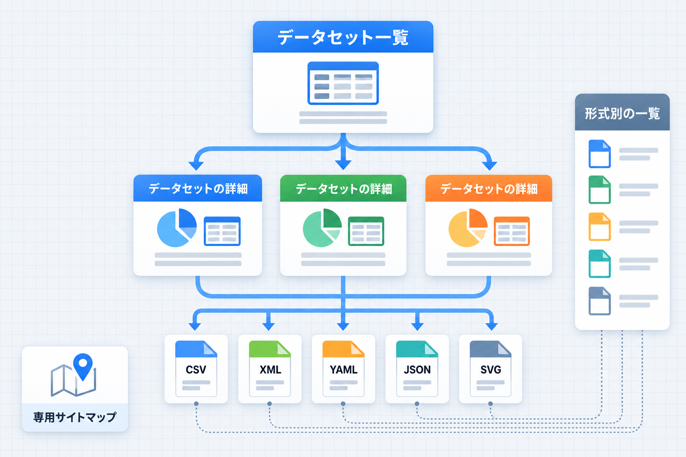
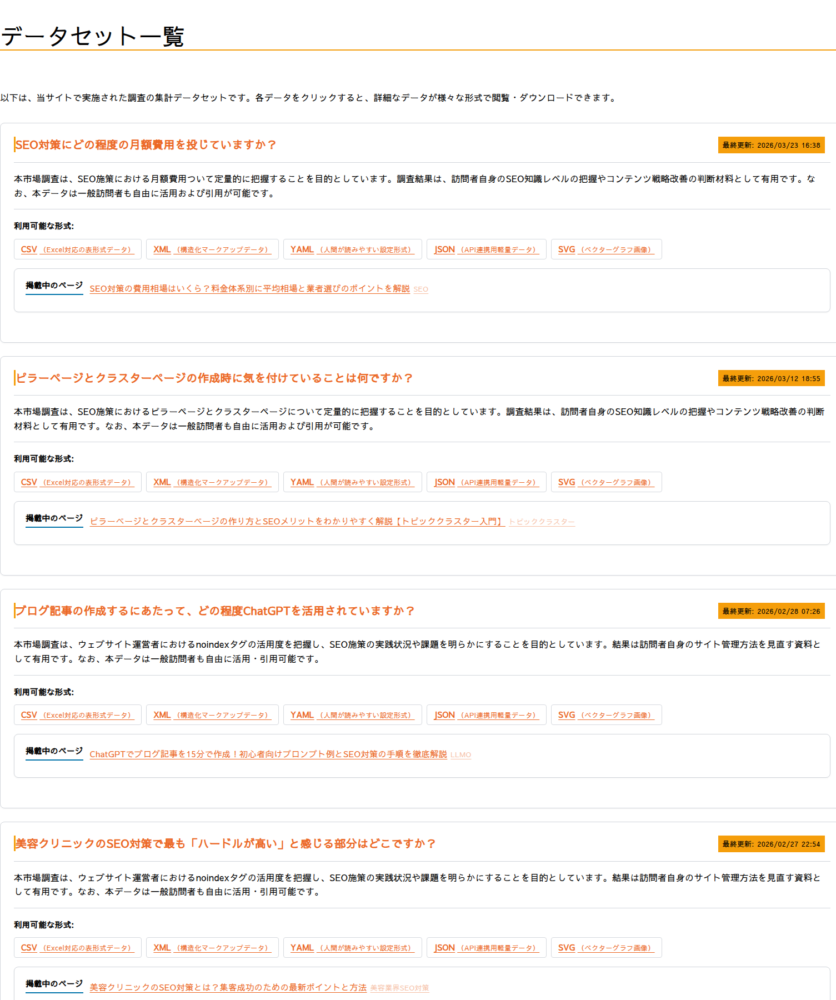
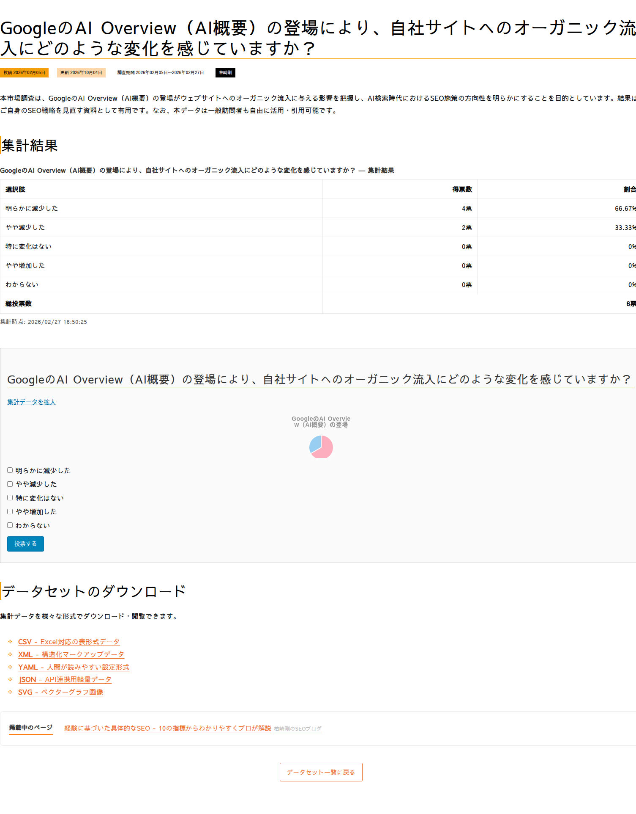
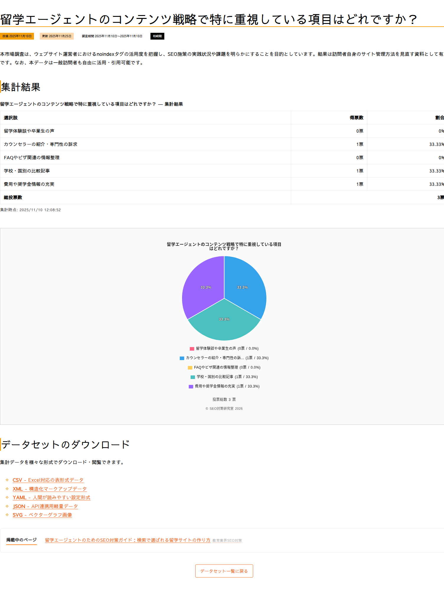
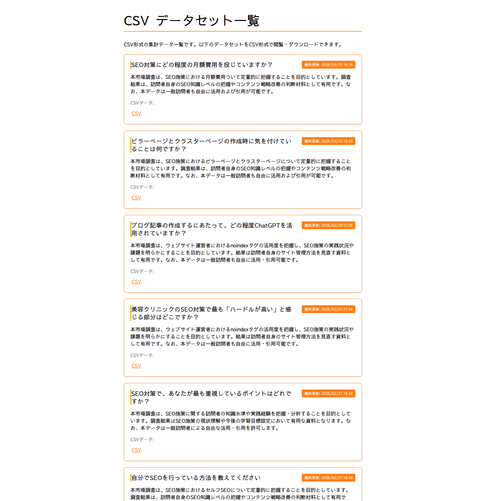
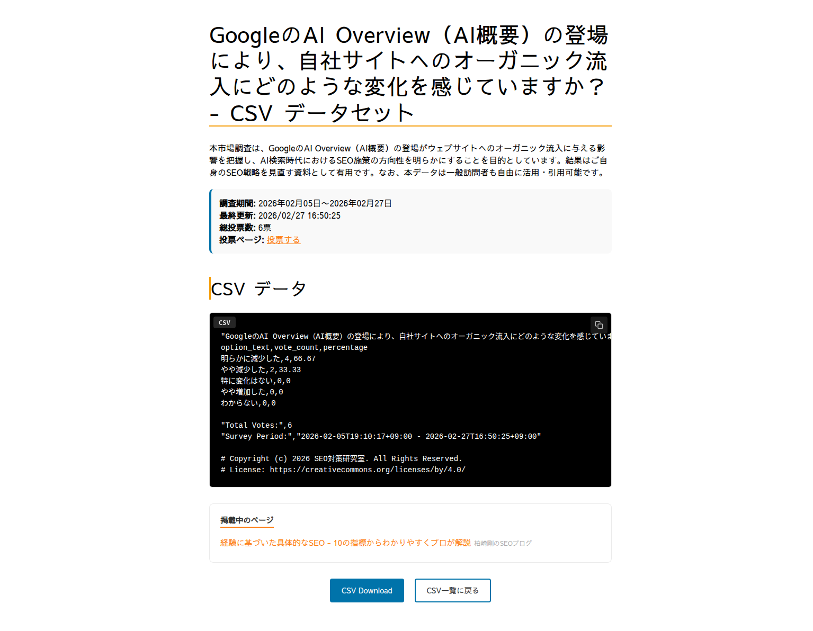

データセットページ
公開したデータセットは、サイトの /datasets/ 以下に専用ページとして自動で公開されます。一覧ページ、データセットごとの詳細ページ、ファイル形式ごとのページがあり、集計結果を表やファイルで見せられます。

ページの一覧
| URL | ページ |
|---|---|
/datasets/ | データセット一覧（公開中のすべて、10件ずつ） |
/datasets/page-2/ … | 一覧の2ページ目以降 |
/datasets/detail-番号/ | データセットの詳細ページ |
/datasets/csv/（xml・yaml・json・svg も同様） | 形式別の一覧（その形式のファイルがあるものだけ、10件ずつ） |
/datasets/csv/detail-番号/ など | 形式別ページ（ファイルの中身を表示し、ダウンロードできる） |
/sitemap-poll-datasets.xml | データセット専用のサイトマップ |
サイトのデザインの中に表示されます
どのページも、お使いのテーマのヘッダーとフッターの間に表示されます。画面写真の見た目はテーマによって異なります。パンくずリストの表示は、テーマや別のプラグインの機能です（このプラグインは、構造化データのパンくずリストだけを出力できます）。
古い URL からの転送
以前の版の URL（/datasets/poll/番号/csv/ や /datasets/csv/番号/ の形）を開くと、新しい URL へ自動で転送されます。
データセット一覧（/datasets/）

| 要素 | 内容 |
|---|---|
| 見出し | 基本設定の「一覧ページのタイトル」（既定「集計データ一覧」） |
| 導入文 | 「以下は、当サイトで実施された調査の集計データセットです。各データをクリックすると、詳細なデータが様々な形式で閲覧・ダウンロードできます。」 |
| カード（1件ごと） | データセット名（詳細ページへのリンク）、「最終更新: 年/月/日 時:分」または「投票待ち」、詳細な説明、「利用可能な形式:」と形式ごとのリンク、「掲載中のページ」と記事へのリンク |
| 並び順 | 最終更新が新しい順（まだ投票が無いものは後ろ） |
| ページ送り | 10件を超えると「前のページ」・番号・「次のページ」 |
| 0件のとき | 「登録されているデータはありません。」 |
| 最下部 | 「（サイト名）に戻る」ボタン |
「利用可能な形式」のリンク名: 「CSV（Excel対応の表形式データ）」「XML（構造化マークアップデータ）」「YAML（人間が読みやすい設定形式）」「JSON（API連携用軽量データ）」「SVG（ベクターグラフ画像）」。ファイルが作られている形式だけが表示されます。
色合い
カードの枠・リンク・ボタンなどの色は、基本設定の「カラーテーマ」に合わせて表示されます。ページの背景や見出しの書体はお使いのテーマに従います。
詳細ページ（/datasets/detail-番号/）

| 要素 | 内容 |
|---|---|
| 見出し | データセット名 |
| バッジ | 「投稿 年月日」「更新 年月日」、「調査期間 年月日〜年月日」（まだ投票が無ければ「まだ投票がありません」）、作成者名 |
| 説明 | 詳細な説明（空なら表示しません） |
| 集計結果 | 表（列「選択肢」「得票数」「割合」、最下行「総投票数」）と「集計時点: 年/月/日 時:分:秒」。割合は小数第2位まで |
| 投票ブロック | 記事と同じ投票ブロック（受付中なら投票できます）。「このデータセットの詳細ページを見る」は表示しません |
| データセットのダウンロード | 「集計データを様々な形式でダウンロード・閲覧できます。」と、形式別ページへのリンク（「CSV - Excel対応の表形式データ」など） |
| 掲載中のページ | 投票ブロックを置いている公開済みの記事（無ければ表示しません） |
| 最下部 | 「データセット一覧に戻る」ボタン |

調査期間の決まり方
調査期間は、接続元ごとに記録された最後の投票日時のうち、最も古い日から最も新しい日までです。投票制限の解除後に同じ接続元が投票し直すと、以前の日時は上書きされます。管理画面で入力した投票数は含みません。
形式別の一覧（/datasets/csv/ など）

| 要素 | 内容 |
|---|---|
| 見出し | 「CSV 集計データ一覧」のように、形式名と「一覧ページのタイトル」 |
| 導入文 | 「CSV形式の集計データ一覧です。以下のデータセットをCSV形式で閲覧・ダウンロードできます。」（形式名が入ります） |
| カード | データセット名、「最終更新」または「投票待ち」、説明、「CSVデータ:」と形式別ページへのリンク |
| ページ送り | 10件を超えると「←前のページ」・番号・「次のページ→」 |
| 0件のとき | 「CSV形式のデータはありません。」 |
| 最下部 | 「（一覧ページのタイトル）に戻る」「ホームに戻る」 |
形式別ページ（/datasets/csv/detail-番号/ など）

| 要素 | 内容 |
|---|---|
| 見出し | 「データセット名 - CSV データセット」 |
| 説明 | 詳細な説明 |
| 情報枠 | 「調査期間」「最終更新」（無ければ「投票待ち」）「総投票数」「投票ページ: 投票する」。受付終了中は「投票ページ: 受付終了（結果を見る）」。リンク先は詳細ページです |
| （形式） データ | ファイルの中身をそのまま表示（SVG は画像として表示） |
| 掲載中のページ | 投票ブロックを置いている公開済みの記事 |
| （形式） Download | ファイルをダウンロードする青いボタン（例: 「CSV Download」「XML Download」） |
| （形式）一覧に戻る | 形式別の一覧へ戻る（例: 「CSV一覧に戻る」） |
| 見つからないとき | 表示 |
|---|---|
| データセットが無い・公開されていない | 「指定されたデータが見つかりません。」（404） |
| その形式のファイルがまだ無い | 「指定されたデータセットが見つかりません。」（404） |
データファイルの中身
| 形式 | 内容 |
|---|---|
| CSV | 1行目に設問、次に見出し行（選択肢・票数・割合）、選択肢ごとの行、合計票数、調査期間（票があるとき）、著作権表示、ライセンスの URL。Excel で文字化けしにくい形式で保存されます。数式と誤解される書き出しの文字には対策がしてあります |
| XML | 設問・最終更新・調査期間・著作権・ライセンスなどの情報、合計票数、選択肢ごとの名前・票数・割合 |
| YAML／JSON | 番号、設問、最終更新、調査期間（開始・終了）、著作権、ライセンス、合計票数、選択肢ごとの名前・票数・割合 |
| SVG | 800×600 の円グラフの図。上に設問、凡例「選択肢 (xx%)」。0票の選択肢は凡例に出ません。1票も無いときは灰色の円に「No votes yet」 |
- 割合は小数第2位で四捨五入します。最終更新はファイルを作った日時です。
- ファイルはメディアのアップロード用フォルダの中に保存されるため、プラグインを更新しても消えません。
データファイルが更新されるタイミング
| きっかけ | 更新されるもの |
|---|---|
| 投票があったとき（公開中） | そのデータセットの5つのファイルとサイトマップ |
| 編集画面で選択肢か投票数を変えて保存したとき（公開中） | 同上 |
| 「集計データを全削除する」を実行したとき（公開中） | 同上（0票の内容で作り直し） |
| 基本設定の「データファイルを一括生成する」 | 公開中のすべてのデータセットのファイルとサイトマップ |
| データセットを公開したとき | そのデータセットの5つのファイルを作り、サイトマップに載せる |
| データセットを下書き・非公開・ゴミ箱にしたとき | そのデータセットの5つのファイルを削除し、サイトマップから外す |
| 1.0.5 以前から更新したとき（初回の1回だけ） | 自動で全ファイルを作り直します（自動処理と権限）。それ以降の更新では作り直しません |
非公開・ゴミ箱にしたとき
データセットを下書き・非公開・ゴミ箱にすると、データセットページが表示されなくなり、データファイルも自動で削除され、サイトマップからも外れます。もう一度公開すると、その時点の集計でファイルが作り直されます。
カラーテーマが効く場所
| ページ | 色が変わる部分 |
|---|---|
| 詳細ページ | 「掲載中のページ」欄と集計表 |
| 形式別の一覧 | 見出しの下線、カードの枠、「最終更新」の表示、リンク、ページ送り |
| 形式別ページ | 「掲載中のページ」欄、「投票ページ」のリンク（ダウンロードボタンと情報枠は青のまま） |
| 記事の投票ブロック | 「フォーマット別データダウンロード」のリンクの枠と文字 |
| データセット一覧（/datasets/） | カードの枠と背景、リンク、ボタン、補足の文字 |
設定方法は 基本設定 を参照してください。